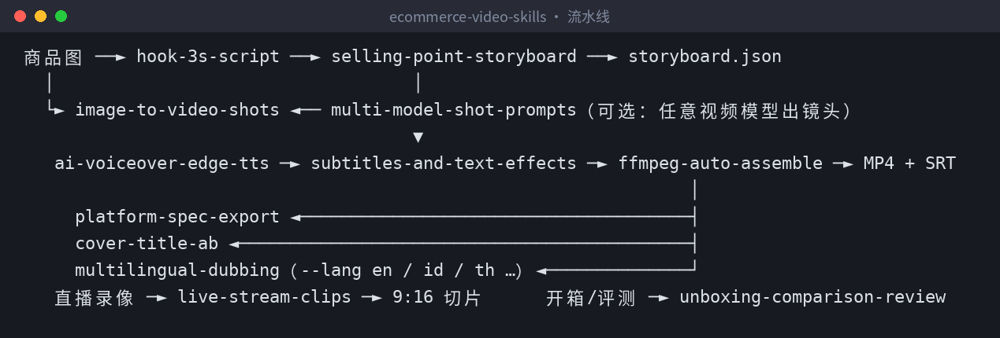
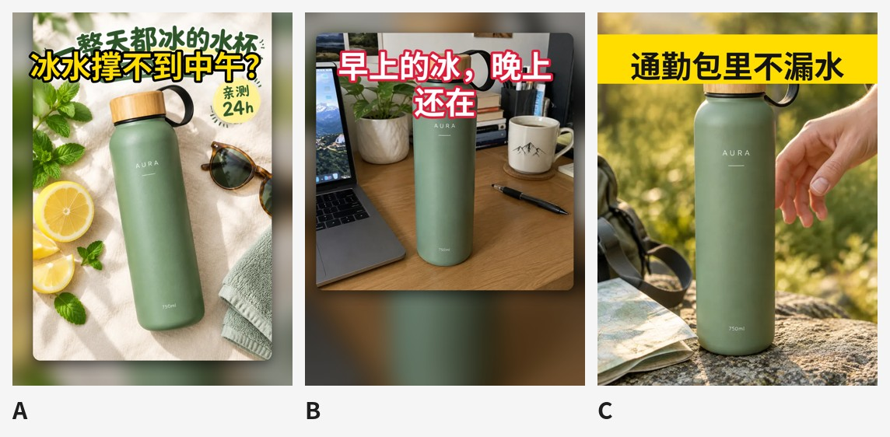

6张商品图→17秒带货短视频：开源12个Claude Skills，配音、字幕花字、BGM本地一条命令出片
6张商品图→17秒带货短视频：开源12个Claude Skills，配音、字幕花字、BGM本地一条命令出片
一句话介绍：ecommerce-video-skills 是一套开源的电商短视频 Agent Skills。丢几张商品图给 Claude Code / Codex / Cursor，它会写钩子和分镜、出多模型镜头提示词，并且真的在本地用 Python + ffmpeg 把视频剪出来 ——配音、字幕花字、转场、BGM、多平台导出都包含在内。
仓库地址：https://github.com/xianyu110/ecommerce-video-skills （MIT 协议）
一、痛点：带货视频，卡的不是创意，是流水线
做电商短视频，一条 15 秒的视频要走完：写脚本 → 想前三秒钩子 → 分镜 → 找素材/图生视频 → 配音 → 字幕花字 → 剪辑 → 加 BGM → 按平台导出 → 做封面。
问题在于：
- AI 能写脚本，但不会剪片 ：让大模型写分镜很容易，最后还是得自己开剪辑软件一镜一镜拖。
- 图生视频“很酷但商品变了” ：瓶身颜色变了、Logo 糊了，带货视频最怕这个。
- 每个平台尺寸不一样 ：抖音 9:16、小红书 3:4 更占屏、淘宝主图视频 1:1、Amazon 常用 16:9，底部还有商品卡和右侧按钮会挡字幕。
- 广告法 ：“最好”“第一”“100% 有效”一不小心就写进口播里了。
这个项目的目标是：把上面这条流水线拆成 Agent 能执行的 12 个步骤，其中剪辑环节用脚本真正跑出成片。
二、项目是什么
核心是一条能跑的本地流水线：
storyboard.json→ edge-tts 逐句配音 → Ken Burns 镜头 → xfade 转场 → ASS 字幕/花字 → BGM 自动闪避 → 两遍响度标准化（≈ -14 LUFS）→ MP4 + SRT
纯 Python + ffmpeg，不需要剪辑软件，剪辑这一步也不需要任何 API Key （配音用的是免费的 edge-tts）。

和一堆提示词相比，它还做了这些事：
- 🔒 商品一致性锁 ：图生视频提示词第一步先锁定形状/颜色/Logo。
- 🧠 模型中立 ：同一份分镜适配 Seedance / 可灵 / Veo / Runway / 海螺 / 万相等，不编造任何模型的价格或参数 ，每个镜头都有本地 Ken Burns 兜底。
- 📐 平台规格 + 安全区 ：字幕避开底部商品卡和右侧按钮。
- 🌏 出海友好 ：storyboard 加
line_en等字段，--lang en直接渲染英文版。 - ⚖️ 合规意识 ：钩子/评测模板内置广告法绝对化用语检查、“只写测过的数据”、公平对比规则。
三、技能清单（12 个）
| Skill | 做什么 | 脚本 |
|---|---|---|
image-to-video-shots |
主图转视频：图生视频镜头提示词 + 商品一致性锁 + 本地 Ken Burns 兜底 | assemble.py |
hook-3s-script |
3 秒钩子：9 种钩子类型一次出 6–10 版（台词+画面+花字），广告法自检 | — |
selling-point-storyboard |
卖点分镜：15/30/60 秒结构，一镜一信息，输出可渲染的 storyboard.json | — |
multi-model-shot-prompts |
多模型镜头提示词：通用骨架 + 运镜词表 + 文生/首帧/首尾帧写法 | — |
ai-voiceover-edge-tts |
AI 口播：edge-tts 逐句合成、去静音、时长统计、缓存 | tts_edge.py |
subtitles-and-text-effects |
字幕花字：ASS 四种样式（字幕/弹出花字/贴纸/CTA）、关键词高亮、安全区 | make_subs.py |
ffmpeg-auto-assemble |
一条命令出片：配音、转场、字幕、BGM 闪避、响度标准化 | assemble.py 等 5 个 |
platform-spec-export |
抖音/TikTok Shop/视频号/小红书/淘宝/Amazon 规格导出，安全区预览 | export_platform.py |
live-stream-clips |
直播切片：时间戳 / 字幕关键词 / 停顿提议三种选段 | live_clip.py |
unboxing-comparison-review |
开箱/对比评测：结构、拍摄清单、公平对比规则 | make_cards.py |
multilingual-dubbing |
多语言配音：本地化改写 + 各市场音色 + --lang 一键渲染 |
assemble.py |
cover-title-ab |
封面标题 A/B：挑清晰帧/干净底图 + 多标题版式 + 对比图 | cover_ab.py |
四、安装
npx skills add xianyu110/ecommerce-video-skills # 一行安装（skills CLI）
# 或在 Claude Code 里：/plugin marketplace add xianyu110/ecommerce-video-skills
手动安装：
git clone https://github.com/xianyu110/ecommerce-video-skills.git && cd ecommerce-video-skills
mkdir -p ~/.claude/skills && cp -r skills/* ~/.claude/skills/ # Claude Code
mkdir -p ~/.codex/skills && cp -r skills/* ~/.codex/skills/ # Codex
mkdir -p .cursor/skills && cp -r skills/* .cursor/skills/ # Cursor（项目内）
pip install -r requirements.txt # pillow numpy edge-tts；另需自行安装 ffmpeg（含 libass）和中文字体
五、实战：30 秒跑通仓库自带示例
Step 1：看一眼 storyboard.json
示例在 examples/aura-bottle/，6 个镜头，每个镜头一张图 + 一句口播。节选前两镜：
{
"voice": "zh-CN-YunxiNeural",
"rate": "+12%",
"bgm": "auto",
"tag": "AURA 保温杯 · 演示",
"shots": [
{"image": "assets/lifestyle.webp", "motion": "punch", "transition": "slideup",
"line": "夏天带冰水出门，不到中午就变温了？",
"sub": "冰水不到中午就**变温**了？", "title": "冰水撑不到中午？"},
{"image": "assets/white-bg.webp", "motion": "zoom_in", "transition": "fade",
"line": "换这只 AURA 保温杯试试。", "sub": "换这只 **AURA** 保温杯试试"}
]
}
几个关键字段：line 是配音文本（镜头时长 = 配音时长 + 前导 + 留白，自动对齐 ）；sub 里 **xx** 是关键词高亮、| 是分行；title 是弹出花字；motion 支持 zoom_in / zoom_out / pan_* / punch / static，punch 是 0.35 秒快速推近，专门给开场钩子用。
Step 2：一条命令出片
python scripts/assemble.py examples/aura-bottle/storyboard.json -o out/aura.mp4
示例渲染出的成片参数（用 ffprobe 实测）：1080×1920、30fps、H.264 + AAC、17.03 秒，同时输出 .srt 字幕文件：
1
00:00:00,100 --> 00:00:02,755
冰水不到中午就变温了？
2
00:00:02,955 --> 00:00:04,873
换这只 AURA 保温杯试试
想先看节奏不想等配音，可以离线预览：--tts none（按字数估时）。
Step 3：同一份分镜渲染英文版
python scripts/assemble.py examples/aura-bottle/storyboard.json --lang en \
--voice en-US-AndrewNeural -o out/aura-en.mp4 --build build/en
--lang en 会读取 line_en / sub_en / title_en / cta_en 字段。multilingual-dubbing 里还列了美国、英国、印尼、泰国、越南、日韩、墨西哥、巴西等市场的 edge-tts 音色。
Step 4：多平台导出 + 安全区检查
python scripts/export_platform.py out/aura.mp4 --platform douyin tiktok-shop channels xiaohongshu taobao-main amazon
python scripts/export_platform.py out/aura.mp4 --safe-preview out/safe.png # 安全区叠加图
比例不同时默认“模糊填充”（--mode blur），也可以 --mode crop 裁切。导出完会写一份 export_report.json，记录每个版本的分辨率、时长、体积。
安全区预览会在一帧上叠加三块经验区域：顶部状态栏约 9%、右侧按钮栏约 15% 宽、底部文案/商品卡约 22%。可以看到字幕和花字都避开了红色区域（这些是经验值，最终以真机预览为准 ）：
Step 5：封面 A/B
python scripts/cover_ab.py out/aura.mp4 --images build/still00.png build/still03.png \
--titles "冰水撑不到中午？|早上的冰，晚上还在"
输出 cover_A.jpg、cover_B.jpg… 和一张对比图 ab_sheet.jpg，四种版式轮换（黄字黑描边 / 白字红描边 / 黄底黑字横幅 / 半透明黑底白字）：

一个真实的小教训：A 版的底图本身就带了标题字（来自小红书封面图），新标题叠上去就有点打架。所以 skill 里推荐优先用不带字幕的干净底图 （--images build/still*.png），而不是直接抽成片帧。
六、进阶技巧
1. 先让 Agent 写钩子，再进分镜
用 hook-3s-script 给这个保温杯写 8 个前三秒开场，标出推荐 Top 3
skill 要求每条 ≤ 18 个汉字（3 秒说完）、第一帧必须是商品或痛点（别放 logo 片头）、花字 ≤ 10 字，并且禁用“最、第一、顶级、国家级、100%、根治”等绝对化用语——示例里的“8 小时”“晚上还有冰”也明确标注了：只有真测过才能用 。
2. 直播录像切高光
# 按字幕关键词找片段，并烧录字幕
python scripts/live_clip.py live.mp4 --srt live.srt --keywords "演示,对比,上链接,库存" --window 30 --burn-subs
# 没有字幕：在停顿处切分，输出候选 CSV 再挑
python scripts/live_clip.py live.mp4 --propose 30 > proposals.csv
横屏会自动转成 9:16（模糊背景 + 居中画面）。
3. 用你自己有版权的音乐
bgm: "auto" 是 make_bgm.py 实时合成的免版权 BGM；想换音乐就 --bgm music.mp3。有人声时 BGM 会自动再压低（闪避），最后统一做两遍 loudnorm。
4. 想接真正的图生视频模型
用 multi-model-shot-prompts 把同一份分镜改写成不同视频模型的提示词，生成的片段在 storyboard 里用 video + start 字段替换图片即可；没生成好的镜头，Ken Burns 兜底照样能出片。
七、没有 Claude / API？
这些 skill 在任何能读 SKILL.md 的 Agent 里都能用；本地剪辑脚本不需要任何 API Key 。如果你还没有趁手的模型/接口：
- 方法一 · Claude 国内镜像站 ：
https://claude-opus.top/—— 打开即用，把 SKILL.md 粘进对话就能按步骤出脚本、分镜和提示词 - 方法二 · 一站式 API ：
https://tryallapi.com/register?aff=5A6A—— 需要在脚本或 Agent 里调模型时，可以把https://tryallapi.com/v1作为 OpenAI 兼容的 BASE_URL（任何 OpenAI 兼容网关均可） - 商品图还没做？
https://gptimage2.asia/—— 在线用 GPT Image 2.5 生成主图和场景图，出好图再交给本仓库转成视频
八、写在最后
这套 skill 不是要替代剪辑师，而是把“批量出带货视频”里重复、确定的部分自动化：分镜写成 JSON，剪辑交给 ffmpeg，规格和安全区交给脚本，人只需要把关卖点是否真实、成片是否好看。
示例中的「AURA」是 AI 生成的虚构商品，“24h 保冰”等卖点仅作演示。平台规则经常变化，上传前请以各平台官方说明为准。
觉得有帮助的话，欢迎点个 ⭐ Star：
👉 https://github.com/xianyu110/ecommerce-video-skills
姊妹仓库：
- 先出图再出视频：电商出图 Skills（本仓库示例视频的素材就来自它）：https://github.com/xianyu110/ecommerce-image-skills
- 品牌 IP 视觉套件 Skills：https://github.com/xianyu110/brand-ip-kit-skills
- 国内上线 Skills（ICP 备案 · 支付 · 小程序 · 隐私合规）：https://github.com/xianyu110/golive-china-skills
我是 MaynorAI 团队，分享 AI 编程、AI SaaS 工具出海、一人团队搭建经验。